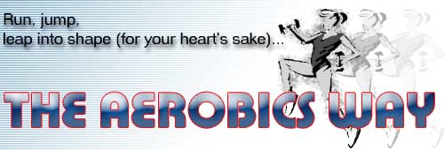
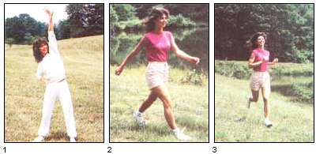
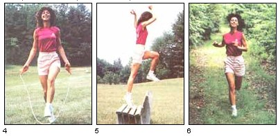
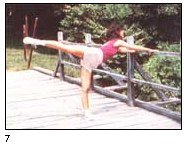
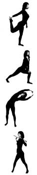

Adele Greenfield (and MOTHER's staff)
It seems that people from all walks of life are joining the burgeoning ranks of aerobic exercisers. Just look around! City parks are crowded with noon-hour runners...living rooms are reverberating with the grunts and groans of men and women taking up the challenge of the Jane Fonda Workout...and exercise studios of every description (with programs that run the gamut from common sense to unproven theory) are crammed with folks in search of fitness.
Of course, aerobics isn't the only (or even a complete) route to good health and extra energy ... but creating such an exercise routine for yourself is an excellent way to start down the road to a healthier, more fulfilling (and perhaps even longer) life. And once you get yourself moving on a regular basis, you might just find that your other habits will improve also. However, I think it's best to consider the health benefits as a bonus ... because aerobic exercise is first, foremost, and primarily fun!
WHAT IS AEROBICS?
Simply put, aerobic means "with oxygen". ,Aerobic exercise, then, is any type of vigorous, and extended, activity (such as running, swimming, dancing, etc.) that tends to increase the efficiency with which the body takes in and utilizes oxygen. It's also isotonic, which means that it typically works the large muscle groups in unison ... as opposed to isometric exercises, which build body strength by forcing muscles to function in opposition to each other for short periods of time. Nonstop aerobic movement causes the lungs and heart to constantly pump life-sustaining oxygen through the blood, andby toning the muscles and heartcan help you develop both strength and endurance.
As a stress-management consultant (and an enthusiastic exerciser myself) I'm a true aerobics aficionado ... not only because I believe this type of movement provides a proven avenue to physical Fitness, but also because I feel that it offers a viable means of releasing emotional tension and, therefore, increasing mental concentration. However, no form of exercise will let you achieve a self-sustaining plateau of fitness. Getting and staving in shape requires a lifetime commitment! Most people, though, discover that - once they start working out on a regular basisthey soon enjoy exercising so much (and it becomes such an important part of their daily routine) that giving it up begins to seem downright unthinkable!
PICK A PROGRAM
When contemplating which sort of aerobic activity you'd like to take up (and there are many,), first consider the needs of your body, and then think about what sort of exercise you'd most enjoy doing. For instance, if you have a weak back and you like water sports, why not take up swimming? It will probably be full and will help strengthen your sacroiliac (whereas jogging could jar your back, making exercising so painful that you'd soon abandon it).
While deciding on a program, keep in mind that aerobic fitness depends upon your increasing your heart rate. And in order to keep that ticker thumping strong, you've got to work your body hard and fast for at least 20 minutes at a stretch, and do so three or more times a week. Of course, if you're unused to strenuous exercise, you'll need to build up to it over a couple of weeks or months and be patient with yourself. (Also, should you have any question about your health, be sure to check with your doctor before you begin a routine.) In general, though, if you listen to your body, it'll tell you when you're pushing too hard (or not hard enough!), and you'll be able to react accordingly.
And in order to understand your body's language, you'll have to determine your maximum heart rate (that is, how fast the organ is capable of beating) ... then compute the target training zone for your heart (how fast it can beat safely) ... and, finally, aim for that target zone during your workout.
At birth, your heart had a "top speed" of roughly 220 beats a minute. On the average, this' rate decreases one beat with each year of life. So, to determine your present maximum heart rate (MHR), subtract your age from 220. If you're 30, then, your MHR would be 190. Any more thumps and you're asking for trouble. Ideally, strenuous exercise will push your heart rate up to a target training zone of about 70% to 85% of its MHR. That figure, for our hypothetical 30-year-old, would be between 133 and 162 beats per minute (190 X 0.7 = 133 and 190 X 0.85 = 162).
The simplest way to monitor your heart rate is to take your pulse ... and you should do this every few minutes during your workout, to make sure you're not over- or underexerting yourself. To check your heartbeat, grasp your left wrist with your right hand and find your pulse (below your left thumb) with the fingers (not the thumb) of your right hand. Now, checking the second hand of your watch, count the number of throbs you feel (through your sensitive fingertips) in ten seconds, and multiply that figure by six to compute the beats per minute. (Note: Although some folks prefer reading the neck pulse, I've found that the wrist gives a more accurate figure.)
Now that you've chosen an aerobic activity (and know how to monitor your heart rate so you can perform that exercise at the optimum level), you're just about ready to hop into a sweat suit or leotard and get moving!
WHEN THE GOING GETS TOUGH...
However, before beginning your workout program, it's vitally important that you make a commitment to [1] never, for any reason -except injury or illness, of coursetalk yourself out of exercising! ... and [2] spend five to ten minutes stretching and warming up before starting a strenuous routine. This second rule (and, believe me, both of these are of great importance) is necessary because, if you don't take the extra time to warm up your body and get your blood flowing and your muscles limber, you'll be laying yourself wide open to injury during the rigorous part of your workout.
After you've warmed up, though, you can dive into your aerobics with gusto! Really work that body! Throw everything you've got into each movement, and get your pulse rate up to target! And don't stop exercising until you've danced the full 20-minute routine, swum the 30 laps, run the entire three miles ...or attained whatever reasonable goal you set for yourself. Also, don't forget to check your pulse rate frequently. If it's too fast, lower the intensity of your movements, but if it's too slow, leap higher ... swim harder ... run faster! As workout guru Jane Fonda says, "Go for the burn!"
Then, when you're finished, don't flop down on the grass right away. Instead, take another eight minutes or so to cool down (stretch and move about slowly to allow your pulse to return to its usual rate and to make sure that blood won't pool in your legs). Once your systems are back to normal (when your pulse rate is below 100), you can reach for the Gatorade or hop into the shower!
THAT'S ALL THERE IS TO IT!
Aerobics probably won't (despite the claims made by some spas) help you fall in love or put money in your pocket ... but the act of developing (and maintaining!) a challenging and realistic fitness routine for yourself can help you become stronger physically and more alert mentally ... making you more ready to really enjoy life's pleasures-and to handle its pressureswhen they come your way. And just think, you can achieve all this for the small price of huffing and puffing three times a week.
So get out there and join the ranks of aerobics enthusiasts. It's fun! And besides, you've got nothing to lose (well, a few inches maybe) ... and you have a healthy. heart and a lifetime of vitality-to gain!
Q: Will I lose weight?
A: Maybe. It depends-in Parton what, and how much, you're eating. If you combine exercise with sensible dietary habits, chances are that Your weight will normalize. However, muscle weighs more than fat, so - you could actually wind zip gaining ... but if inches go away and Your body firms lip, why worry about what the scales say?
Q: Do I need a doctor's permission to start exercising?
A: Opinions vary. The general consensus is that, if you're in good health, you'll probably without seeking your physician's OK. Bill if your health is poor (and especially if You have any history of heart problems) its best to talk with your doctor so he or she call help you determine the best way for you to get in shape.
Q: How can I protect my joints during exercise?
A: Wear well-constructed shoes that are specifically designed for the activity you plan to take lip (running shoes for jogging, aerobic dance shoes for indoor aerobics, and so forth). And be sure to bandage any weak joints for support. Also, if you're 40 pounds or more overweight, take zip walking first ... in order to shed a Jew pounds before you add more bounce to Your Program.
Q: Will aerobics help improve my performance at work?
A: Yes! Studies have shown that those folks who exercise hard for 30 to 45 minutes three times a week are more productive on the job than nonexercisers.
Q: Will aerobics help me to better handle stress?
A: Again - yes! A s you improve your strength and stamina, you'll also increase your tolerance for stress. For one thing, continuous energetic movement causes the brain to secrete beneficial chemicals known us endorphins ("morphine within") into the system, and these help create feelings of well-being, whichin turncan alleviate depression, anxiety, and fatigue.
Q: When can I expect to see results from an exercise program?
A: Within three weeks your fitness level should improve, and after four to six - you'll be exercising with case! (Your resting pulse rate may even be lower than it was before you took tip aerobics, but that only means that Your body, is working more efficiently.)
|
 [1 and 2] 5 minutes. To begin the workout, warm up with your favorite stretches. [3] 10 minutes. Move into a brisk walk and gradually intersperse a slow jog with your walk. (Don't run unless you're used to it!) |
 [4] 5 minutes. 4 Skip rope. [5] 7 to 10 minutes. Find a stable bench or a tree stump and step up onto it with the right foot, with the left foot following. Then jump over it to the other side. Repeat for 25 to 50 counts and then reverse the leading foot. [6] 7 to 8 minutes. Go into an alternating brisk A walk and jog again. |
 5 minutes. Stretch while you walk to wind down, and finish up by repeating your warm-up exercises to cool down. And thats it! |
|
 |
 |
|